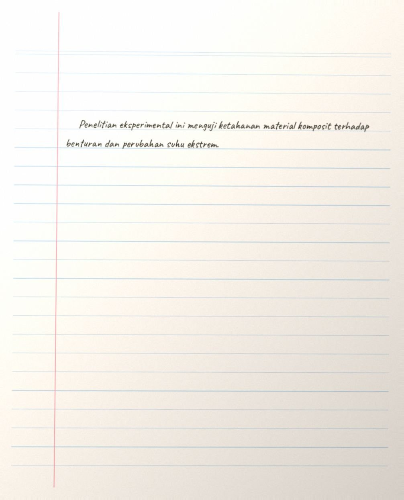

Meja Periksa Naskah Ujian
Verifikasi keaslian naskah tugas tulis tangan mahasiswa terhadap manipulasi generator font sintetis dan eksekusi pena robot (pen-plotter AI).
Unggah atau seret foto tulisan tangan mahasiswa ke sini
Mendukung foto format JPG, PNG, atau pindaian kamera smartphone resolusi tinggi.

Pola Keragaman Glif (Glyph Variance)
Mendeteksi apakah pengulangan huruf yang identik (alograf ‘a’, ‘e’, ‘k’) memiliki variasi sudut dan tekanan pena mikro alami, atau identik sempurna seperti font digital / plotter.
Fluktuasi Baseline & Spasi
Memeriksa konsistensi tarikan kalimat terhadap garis buku. Tangan biologis mengalami keletihan motorik alami, sedangkan plotter AI mempertahankan linearitas kaku tanpa deviasi.
Dinamika Tinta & Ketebalan
Menganalisis saturasi pigmen di titik henti pena, penekanan awal (landing points), dan absorpsi serat kertas. Plotter menghasilkan ketebalan garis konstan dengan ujung tumpul tak natural.
Pindaian Lembar Jawaban Ujian Asli
Mahasiswa: Ahmad Fauzan • NIM: 13521088 • Resolusi: 1006 × 1245 px
Perbandingan Kontur Glif Karakter "a"
Spesimen Kata 1 vs Spesimen Kata 2 (Font Caveat)
Buku Catatan Arsip Pengujian
Pangkalan data riwayat inspeksi naskah mahasiswa semester ganjil 2024/2025.
42
8
34
1.8 detik
| ID Berkas | Nama Mahasiswa | Mata Kuliah & Lembar | Kesesuaian DTW | Status Verdict | Tindakan |
|---|---|---|---|---|---|
| BAF/KOMP/2024/X-1088 |
Ahmad Fauzan
NIM 13521088
|
IF-4020 Teori Komputasi Lanjut • Lembar 1 | 89.0% (Seragam) | [ RISIKO TINGGI: PLOTTER ] | |
| BAF/KOMP/2024/X-1045 |
Bagas Pratama
NIM 13521045
|
IF-3210 Algoritma Lanjut • Lembar 1 | 14.2% (Wajar) | [ OTENTIK: LOLOS ] | |
| BAF/KOMP/2024/X-1102 |
Rafi Aditya
NIM 13521102
|
IF-3210 Algoritma Lanjut • Esai Mandiri | 96.8% (Identik) | [ RISIKO TINGGI: PLOTTER ] | |
| BAF/KOMP/2024/X-1012 |
Siti Rahmawati
NIM 13521012
|
IF-2110 Dasar Rekayasa Perangkat Lunak | 18.5% (Wajar) | [ OTENTIK: LOLOS ] |